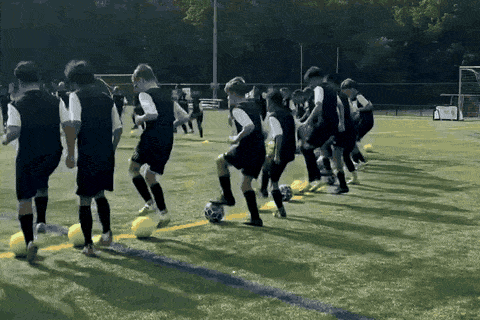
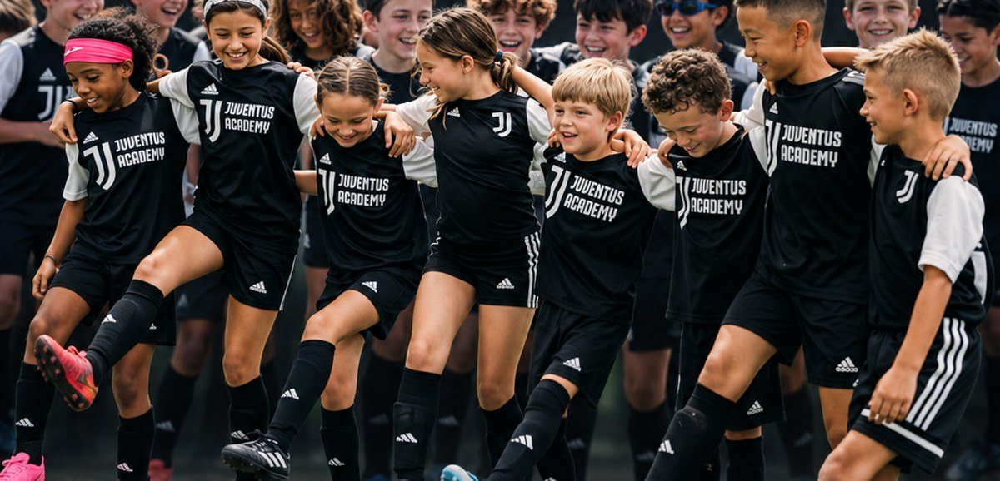

|
Hola María, Empezaste la inscripción para el ID Camp de Juventus en Dallas. Para que sepas exactamente qué va a vivir tu hijo o hija, así es un día con los entrenadores de Juventus Academy que vienen desde Italia. Parte 1 Físico: cómo se mueve Ejercicios físicos adaptados a cada edad.  Parte 2 Técnica: el balón, una y otra vez Conducción, pase, tiro y defensa. Los entrenadores corrigen a cada jugador de cerca: los grupos son pequeños, con un entrenador por cada 12 a 15 jugadores. Parte 3 Juego: entender el partido Partidos en espacio reducido para aplicar lo aprendido, en un ambiente divertido y competitivo.  Durante los dos días, los entrenadores observan a cada jugador. Los que más se destacan quedan anotados para futuras oportunidades de Juventus Academy, como la Juventus Training Experience en Italia. 📅 Sábado 21 y domingo 22 de noviembre · 9 AM a 1 PM
📍 Soccer Spectrum, 1251 Digital Dr., Richardson, TX
⚽ Niños y niñas de 6 a 16 años, jugadores y porteros |
¿Tienes alguna duda? Responde este correo y te ayudamos.
|